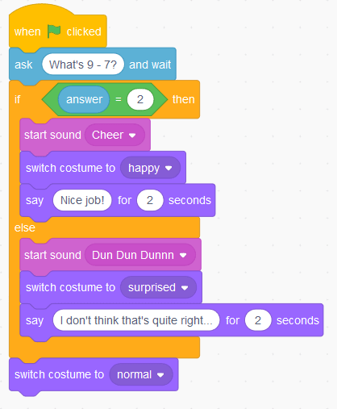

Going fast!
Software performance on modern systems
Dmytro Shynkar
A bit of context
I spent last couple years helping to build this game
A fast paced multiplayer FPS with destructible environments
- Fast and responsive movement
- Everything around is destructible
- (Un)controllably chaotic battles
Performance is critical
Nobody would want to play like this
Though some still do...
So basically
Not only games
- The Amazon latency-to-revenue study sources are somewhat dubios
- Mobile applications battery usage
- Cloud/infra costs
- much more
There's a reason big companies keep investing into faster software
Some examples
- Google spends ungodly amounts of engeneering resources on V8 and WASM
- Same for Meta and HHVM
- Uber switches it's app to QUIC for better latency
- Netflix hotpatches their cloud deployments and works with Intel to squeeze every drop
- And much more
this is just what 15 minutes of googling shows
What is Performance?
- How fast a single unit of work gets done - latency
- How much work gets done in a unit of time - throughput

Latency
Latency
- A lot of times the thing that leads to things feeling slow
- Crazy important for games and any other interactive media
- Oftentimes heavily impacted by IO performance
- Average values are dangerously misleading
Throughput
- More of a measure of whole system's performance
- Absolutely critical for non-interactive workloads
Naively: lower the latency - better the throughput

Just like gravity, Queueing Theory isn't kind
Bad engineering decisions can absolutely ruin both!
Other types of software performance
- Scalability
- Utilization
- Energy efficiency
- IOPS
- Probably infinitely more
Hardware context
All software ultimatevely runs on some kind of hardware
Even if it takes a long chain of abstractions to get there
Why does it matter?
≠
Enough rambling

Demo time
Was it good?
Let's see!